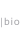

|  |  |  |  |  |
 |
TEXT out of conTEXT unique sentences reintroduced via postcards to those who said them 2007-2010 a practice launched into the lives of every day people |
|
A friend once started a story with a line that jumped out at me: "I think the thing that kept my parents together for as long as they were together was their equal love of bad weather." I loved its uniqueness, that I would probably only hear a sentence like that once. And it could almost stand on its own as a very very short story. Although it was short enough to pull out and put on a postcard, I didn't (yet). [front] I started noticing more of these sentences, collecting them, expressing my delight to the people who said them. The concept for the card came at the end of an art festival in Kosovo. Each card with my contact details that I gave to a new friend included one of the unique sentences I'd heard him or her say during the 10 days we'd spent together. [back] As each person read their very very short story, a look of recognition came over their face and they smiled. They seemed to appreciate the experience as much as I had the first time one of their sentences jumped out at me. It was here that I thought postcards could capture the great vignettes that pop out of conversations. Sending them back to the speaker, out of context, allows me to reintroduce a line so that the speaker experiences his or her own language in the way that I first heard it. I entered a second version of the design into series 224 of the cARTed picture show on 21 November 2007 in Germany. Here's how it's evolving. |
Click to
sample
what I've
heard:
|